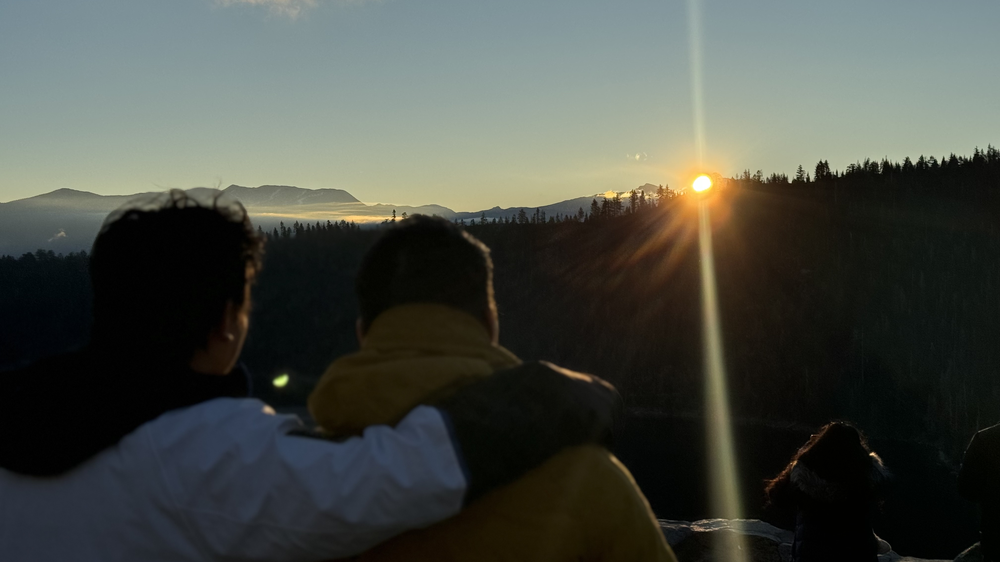

About Me
Hello there! I'm a passionate and highly motivated undergraduate student pursuing a Bachelor of Science in Computer Science at the University of California, Davis. My academic journey is fueled by an insatiable curiosity for technology and its power to transform lives. With a solid foundation in programming, data structures, and algorithms, I've also dipped my toes into the fascinating world of research, exploring the limitless possibilities within the realms of software development, machine learning, and data science.
My Interest
Beyond the confines of computer science, traveling gives me the freedom to disconnect from daily routines and immerse myself in new experiences. One of my most memorable trips was to Lake Tahoe, where the serene beauty of the lake and the ruggedness of the surrounding mountains offered a perfect escape from the digital world.
Whether it's hiking through the Sierra Nevada or kayaking on the crystal-clear waters of Lake Tahoe, each adventure is a chance to create lasting memories with friends and learn more about the world. These experiences are not just escapes but also crucial moments of inspiration. AI might be able to generate realistic image of beautiful view, but not the memory of the trip with my friends.